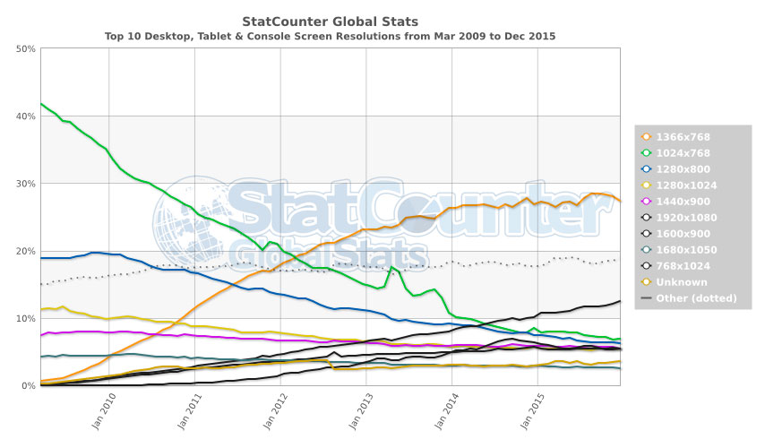

Fase 4 - Media Queries y SEO
Universidad Nacional Abierta y a Distancia - UNAD
Las Media Queries son fundamentales en el diseño web actual, ya que son la base del diseño responsive (responsivo o adaptable). Esto significa que con una misma maquetación HTML, nuestro diseño se adaptará a diferentes dispositivos y tipos de pantalla.
Para que nos hagamos una idea de esta problemática, en 2012, año en que las Media Queries se convirtieron en estándar, convivían en el mercado más de una docena de resoluciones. Desde los 1024×768 píxels de los monitores CRT más antiguos hasta los 2560×1440 de los LCD más modernos en aquel momento. Y eso sin contar a los monitores 4K que estaban a punto de irrumpir en el mercado, ni por supuesto a los dispositivos móviles que ya suponían una parte importante de la navegación web.
Además, las Media Queries también se plantearon como una forma de mejorar la accesibilidad web. A través de ellas es posible, por ejemplo, aumentar el tamaño de las fuentes en determinados dispositivos o mejorar el contraste entre el color de la letra y el fondo.
En la versión CSS3, podemos agregar distintos valores para seleccionar el tipo de medio al que se dirige la regla especificada en una Media Query.
Los valores que podemos definir son:
–all: Se utiliza para todos los tipos de medios o dispositivos.
–print: Se utiliza para impresoras
–screen: Se utiliza para pantallas de ordenador, tablets, teléfonos móviles, etc…
–speech: Se utiliza para lectores de pantalla, generalmente utilizados por personas con discapacidad visual.
Las funciones de medios o Media Features son las características específicas que otorgamos a cada user-agent, navegador o dispositivo de salida.
Aunque algunas de las que vamos a enumerar ya están obsoletas, las más importantes son:
–width: Ancho de la ventana de visualización.
–height: Alto de la ventana de visualización.
–aspect-ratio: Relación de aspecto ancho/alto de la ventana de visualización.
–orientation: Orientación de la ventana de visualización .
–resolution: Densidad de píxeles del dispositivo de salida.
–scan: Proceso de escaneado del dispositivo de salida.
–grid: ¿Utiliza el dispositivo una pantalla de cuadrícula o mapa de bits?
–update: ¿Con qué frecuencia el dispositivo de salida puede modificar la apariencia del contenido?
–overflow-block: ¿Cómo maneja el dispositivo de salida el contenido que desborda la vista a lo largo del eje del bloque?
–overflow-inline: ¿Se puede desplazar el contenido que desborda la ventana de visualización a lo largo del eje en línea?
–color: Número de bits por componente de color del dispositivo de salida, o cero si el dispositivo no es de color.
–color-gamut: Rango aproximado de colores que son soportados por el user-agent y el dispositivo de salida.
–color-index: Número de entradas en la tabla de búsqueda de color del dispositivo de salida, o cero si el dispositivo no utiliza dicha tabla.
–display-mode: El modo de visualización de la aplicación.
–monochrome: Bits por píxel en el búfer de fotogramas monocromo del dispositivo de salida, o cero si el dispositivo no es monocromo.
–inverted-colors: ¿Está invirtiendo colores el agente de usuario o el sistema operativo subyacente?
–pointer: ¿Es el mecanismo de entrada principal un dispositivo señalador y, de ser así, cuán preciso es?
–hover: ¿El mecanismo de entrada principal permite al usuario pasar el ratón por encima de los elementos?
–any-pointer: ¿Es cualquier mecanismo de entrada disponible un dispositivo señalador y, de ser así, cuán preciso es?
–any-hover: ¿Hay algún mecanismo de entrada disponible que permita al usuario pasar el ratón por encima de los elementos?
–light-level: Nivel de luz del entorno.
–prefers-reduced-motion: El usuario prefiere menos movimiento en la página.
–prefers-reduced-transparency: El usuario prefiere una transparencia reducida.
–prefers-contrast: Detecta si el usuario ha solicitado que el sistema aumente o disminuya la cantidad de contraste entre los colores adyacentes.
–prefers-color-scheme: Detecta si el usuario prefiere un esquema de color claro u oscuro.
–forced-colors: Detecta si el user-agent restringe la paleta de colores.
-scripting: Detecta si está disponible el scripting (es decir, JavaScript).
–device-width: Ancho de la superficie de renderizado del dispositivo de salida (Obsoleto).
–device-height: Altura de la superficie de renderizado del dispositivo de salida (Obsoleto).
–device-aspect-ratio: Relación de aspecto ancho/alto del dispositivo de salida (Obsoleto).
Sin duda, el uso más frecuente las Media Queries es para realizar diseño adaptativo o responsive. El objetivo de utilizar una Media Query en una hoja de estilo CSS en nuestra página web es que se ejecute una regla o un conjunto de reglas si se cumple una condición determinada, como puede ser el ancho máximo de pantalla.
No debemos confundir el diseño responsivo realizado mediante CSS y Media Queries con tener una versión de nuestra web para cada dispositivo. La ventaja principal de utilizar las Media Queries es que partimos de un único diseño principal que se irá adaptando y reajustando en función del navegador, el dispositivo, la pantalla o las preferencias del usuario.
De esta manera podremos, por ejemplo, realizar un diseño que tenga una columna en dispositivos móviles, dos columnas en tablets y tres columnas en ordenadores portátiles y de sobremesa. En las mejores prácticas de diseño responsive se recomienda realizar una maquetación orientada al concepto Mobile First. Esto significa diseñar para móvil antes de diseñar para escritorio o cualquier otro dispositivo (Esto hará que la página se muestre más rápido en dispositivos más pequeños). Para ello, debemos hacer algunos cambios en nuestro CSS.
En lugar de cambiar de estilo cuando el ancho es inferior a 768px, deberíamos cambiar el diseño cuando el ancho es superior a 768px. Esto hará que nuestro diseño sea Mobile First.